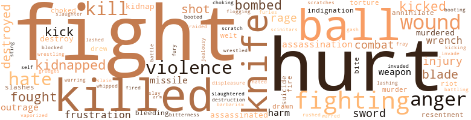
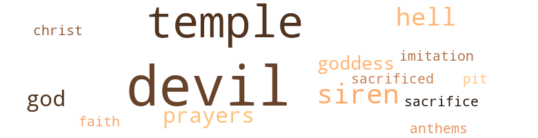

149 music-related terms matched in this text.
Most frequent terms in this topic: music (29); line (13); dance (8); dancing (8); section (8)

belt_out.v.01
Definition: sing loudly and forcefully
| word |
sentence |
| belted |
A second time Lug belted Waggon 's shoulder . |
| belted |
The tight grey trousers were belted with broad , studded leather and fastened with a gold disc . |
chorus.n.01
Definition: any utterance produced simultaneously by a group
| word |
sentence |
| chorus |
There was a sudden , uneven , but cheerful chorus of , " Hello , Mr. Triton . |
cornet.n.01
Definition: a brass musical instrument with a brilliant tone; has a narrow tube and a flared bell and is played by means of valves
| word |
sentence |
| trumpet |
A trumpet shell hung by a leather strap over one shoulder . |
counterpoint.n.01
Definition: a musical form involving the simultaneous sound of two or more melodies
| word |
sentence |
| counterpoint |
As he went down under her double attack , she fled , hearing her own footsteps , then others in counterpoint , lighter , overtaking hers . |
dance.n.01
Definition: an artistic form of nonverbal communication
| word |
sentence |
| dances |
He recalled swinging the mali tongue in the mines - familiar , as the turn and fall of the dances of royalty , the carriage and etiquette of a ball . |
| dances |
" When he dances , hardly anyone will notice - because he is King . " |
| dance |
He watched the figures of the dance bloom like a flower . |
| dance |
Dance with me now , then , " he said , as the music for the partner-changing dance began . |
| dance |
He nodded graciously and began the figure of the dance again , glancing once at Alter : her new partner was a middle-aged man with short brown hair and heavy lips and whose chest bore the royal insignia of the house of B'rond . |
| dance |
Koshar raised his left hand , and the musicians began the introduction to the partner changing dance . |
| dance |
Vibrations suffused his transparency and the pulsing music made the three dust particles that had settled on his co-axial face , seven hundred and thirty years ago , dance . |
| dance |
Now he moved back from the wall again and did his little dance . |
dance.v.02
Definition: move in a pattern; usually to musical accompaniment; do or perform a dance
| word |
sentence |
| dancing |
The patterns growing in their minds were not the same , but as they tried to explain what they thought to each other , or bent to read or reread the lines , the images the poem made upon their thoughts were like flames dancing orderly about one another , contrasting or similar , still a single experience , an awareness of unity , unaware of their isolation . |
| dancing |
Apparently the soldier had a similar experience , for at the first turn of the music , Jon saw the soldier was dancing too . |
| dancing |
Gowns whirled into momentary flowers , and he was dancing with the brown-haired woman the soldier had been dancing with a moment before . |
| dancing |
Gowns whirled into momentary flowers , and he was dancing with the brown-haired woman the soldier had been dancing with a moment before . |
| dancing |
He was dancing with the Duchess . |
| dancing |
When I was dancing with the king , he told me how he had dreamed of my brother this morning . |
dance.v.03
Definition: skip, leap, or move up and down or sideways
| word |
sentence |
| danced |
The now brittle , now flexible , bending and quivering lights danced orderly together . |
| dance |
We 'll dance once more before the evening 's over , Alter . " |
| dance |
" How is it to dance with a king ? " asked Jon . |
| dancing |
" Who were you dancing with ? " |
| danced |
Clea 's black dress was snapped tight around her neck , and her black hair ( once it had been braided with silver chain , and she had danced in a white dress with a man who had short red hair , whose shoulders were box broad , whose words were quietly wise , whose laugh was like a bear 's growl , who wore a military uniform . . . and who was dead ) - her black hair was tight back in a bun that took her fifteen minutes each morning to brush , comb , and roll up so straight and lacquer stiff . |
| dancing |
The girl , dancing back , looked at Clea , and Clea looked back . |
| danced |
When it was very hot , we danced for the sun . " |
| danced |
By the barrack wall , Curly looked up from his cupped hands where a flaming woman danced on his palms and frowned . " |
gong.n.01
Definition: a percussion instrument consisting of a metal plate that is struck with a softheaded drumstick
| word |
sentence |
| gong |
When that gong sounds , hustle I " He left the room . |
| gong |
A gong broke the air like china and a metallic voice hit their ears : " All new recruits report to the Stadium of the Stars . |
hymn.n.01
Definition: a song of praise (to God or to a saint or to a nation)
| word |
sentence |
| anthems |
The musicians wove the old melodies with their polished shells , and with the help of a theremin , opened the ball with the familiar anthems of Toromon . |
kick.v.04
Definition: kick a leg up
| word |
sentence |
| kick |
Suppose he decides to kick us out in the street . |
| kick |
Pay up or I 'll kick you all out . |
| kick |
" When you kick , throw your head back , " she instructed . |
| kicking |
" But everybody 's alive and kicking . |
music.n.01
Definition: an artistic form of auditory communication incorporating instrumental or vocal tones in a structured and continuous manner
| word |
sentence |
| Music |
Music began , and the turning figures of the acrobat and the royal youth opened a path through the other guests , who , at the musical signal , themselves broke into bright whirling couples over the while tile floor . |
| music |
Then the music ended , and petals drifted back to the edge of the floor . |
| music |
Dance with me now , then , " he said , as the music for the partner-changing dance began . |
| music |
The music rose , she turned away from him , and a girl in blue replaced her in his arms . |
| music |
Jon exchanged a few civilities with his partner , the music rose again and a moment later Alter whirled back to him . |
| music |
" I guess so , " Alter said , moving away to the music , coming back , then whirling off . |
| music |
A moment later thunderous rumbling replaced the music , growing , then fading , as darkness filled the high , coffin-shaped windows once more . |
| music |
If Rolth and Clea do n't understand them it 's be - cause they have heard very little music played in this range . . . . " Again he stopped , and the smile returned . " |
| music |
. . . picture my hand palm-stripped , the red harp of sinew caught on no music vulnerable , vaulted in no engine . . . . " Where are you running , Vol Nonik ? |
| music |
before them was the City of a Thousand Suns , beautiful on the lake 's edge , and as they watch , Lug 's neanderthal family might arrive , and Catham and Clea trudge tiredly along the edge of the lake to the City , and from the other side an elderly couple , tattered and exhausted , might also gain the City : perhaps Rara , and Old Koshar ; and the tall figure of Arkor might move towards the low buildings from one side , while the figure of a forest woman , also with the triple scars of the telepath , may approach from the other , their minds having already joined and touched , experience and perception weighed against experience and perception , the music their minds made free in the double sound of their names , Arkor , Larta , that they sung to one another , all , some , or none , the choice random , and left not to chance but to you Free to build or destroy they , too , approached the City of a Thousand Suns , to be struck by blue smoke , dispersed by sudden lightning , dropped from a web of silver fire . . . the red of polished carbuncle . . . the green of beetles ' wings . |
| Music |
Very definitely he heard it - Music had started . |
| music |
A ten-piece orchestra - three radiolyns , a theremin , and six blown shells of various sizes - was making slow windy music from the dais . |
| music |
Apparently the soldier had a similar experience , for at the first turn of the music , Jon saw the soldier was dancing too . |
| music |
The music signalled for partners to change . |
| music |
" We can have it on ... " A burst of music signalled the change . |
| music |
She moved easily , and he had just remembered he ought to smile back out of politeness when the music sounded the change . |
| music |
As his hands went out the music stopped and the languid voice of the king came over the loudspeaker . |
| music |
The musicians started the music once more , partners found one another , and the talking and laughing grew in his ears like waves , like crumbling rock , like the cutter teeth clawing the rock face . . . . |
| music |
The music was very , very happy . |
| music |
Apparently he managed to accumulate an amazing store of information , about all sorts of things , electronics , languages , even music . |
| Music |
Music sang through him , and his huge upper facet reflected the stars . |
| music |
Vibrations suffused his transparency and the pulsing music made the three dust particles that had settled on his co-axial face , seven hundred and thirty years ago , dance . |
| music |
Just as they had made contact , before the music stopped ( and once more their thoughts would become separate , individual , and they would lose awareness of each other and of the hundreds of other crystals that lay over the desert , under the clear perpetual night ) - just then a strident dissonance pierced among them . |
| Music |
Music , very light and fast , was coining from below the balcony . |
| music |
The music had stopped . |
| music |
As the panes lightened , the musicians blew windy music from their tuned sea-shells , and above the marine chords , the weaving voice of a theremin dipped and climbed . |
| music |
The music , which had stopped , suddenly resumed , and above the twining melodies a casual voice sounded over a loud-speaker system : " Ladies and gentlemen , I am so sorry that this unpleasantry has interrupted my morning party , so terribly sorry . |
| music |
Windy music came through the phones . |
| music |
The music blended , melodies wove and unwove with one another . |
| music |
It 's much too complicated for sight reading , though it 's able to catch a lot more nuances in the music than the present system . " |
| music |
There 's not enough room for an acrobat to turn a cartwheel , it 's too dim to see the grease paint on a clown 's face even if he were standing just across the room , and you ca n't hear any . . . any calliope music . |
| music |
The answer came back like fire-works , music , waves of tingling foam : Arkor said , " Because they did not know ' what else to do with it . |
| music |
Suddenly Vol was screaming too , and fighting , and their voices had lost all music and become dissonant and agonized . |
musical_instrument.n.01
Definition: any of various devices or contrivances that can be used to produce musical tones or sounds
| word |
sentence |
| instrument |
" Alter will notice , " Jon said , " Her body 's a trained , sensitive instrument . " |
| instrument |
He placed the instrument along the diagonal of the square and sighted the angle . |
| instrument |
" I do n't feel too . . . " the pilot started , reached forward absently to crumple a sheet of tin-foil he had left on the instrument panel , in which , a few hours ago , had been a fillet sandwich that he and the copilot had shared between them . |
| instrument |
She put the screwdriver down and put the instrument back on the desk . |
| instruments |
Across the lobby wind instruments wailed , and Jon paused on the stairs . |
| instrument |
Engines rang out like plucked cords on a musical instrument . |
| instrument |
He spoke that solo ; like a single instrument after a chord , it implied symphonies to come between them . |
phrase.n.02
Definition: a short musical passage
| word |
sentence |
| phrases |
And something inside her tore apart and she was crying , " Dr. Wental , for the love of . . . help me . . . she 's dead , my daughter , Henna , she 's been . . . Oh , she 's dead . . . " The half phrases stumbled from her tongue . |
| phrase |
You look in the General Medical catalogue and there should be enough around to treat an army - if I can coin a phrase . |
| phrase |
In terms of sound it was as if a symphony 's opening phrase had begun and he was waiting for the cadence to resolve . |
pipe.n.04
Definition: a tubular wind instrument
| word |
sentence |
| pipe |
Alter hung head and white hair down from a pipe that went from the stone chimney to a supporting pipe that was fastened by a firm collar to the roof . |
| pipe |
Alter hung head and white hair down from a pipe that went from the stone chimney to a supporting pipe that was fastened by a firm collar to the roof . |
| pipe |
She was hung double over the pipe . |
| pipe |
And even if he were to go into his basement , find her , and drive her out , or if she were to pick up the length of metal pipe in the corner , climb the stairs , sneak into the living room and bash his and his wife 's brains out - she has killed two people in her life already - there would still be no awareness exchanged . " |
rhythm.n.04
Definition: the arrangement of spoken words alternating stressed and unstressed elements
| word |
sentence |
| rhythms |
Practised in rhythms , it turned wailing against itself as they climbed down the stairs to the yard . |
| rhythm |
Entering the room was like stepping into a cricket 's den , the subtle tsk-tsk of a hundred clocks repeated and repeated , overlapping and melting , with no clear , discernible rhythm . |
| rhythms |
It rose in towers of logic , plumbed oceans of reverberating overtones among syllogistic rhythms , and encompassed all her previous work on random spacial co-ordinates - " . . . gentlemen , it is more than conceivable that by converting the already extant transit-ribbon , we may send between two hundred and three hundred pounds of matter anywhere on the globe with a pinpoint accuracy of microns . " |
| rhythm |
The rhythm was working its way into his shoulders , his body : steady yourself , catch , swing around , and toss . |
score.n.02
Definition: a written form of a musical composition; parts for different instruments appear on separate staves on large pages
| word |
sentence |
| score |
Imagine a black gloved hand , ringed with myriad diamonds , amethysts by the score , turquoises , rubies . |
section.n.01
Definition: a self-contained part of a larger composition (written or musical)
| word |
sentence |
| section |
They turned down one of the stone alleys that marked the oldest section of the city . |
| section |
It was tilted sideways , and even in the moonlight one section of the red-and-gold hull showed black blisters over half its length . |
| section |
But for his own reasons , this hysterical , imperative was what he contemplated as he fled from the blocked-off section , slipped past the guards , and came to the waterfront . |
| section |
Between the inner and outer rings is a section of indistinct apartments , rooming houses , and even occasional private dwellings , for clerks and craftsmen , salesmen and secretaries ; doctors , engineers , lawyers and supervisors : those who had worked hard enough and had been lucky enough to rise out of the confusion of the Pot , and those too weak to cling to the centre who had been flung from the whirling hub . |
| section |
Cut to : A tank has stopped in the middle of a thickly overgrown section of swamp , one corner sunk in the mud . |
| section |
They were ordered after one another to a new section of the wall . |
| section |
" They are sitting - " she took a breath " - in tiny metal cells stacked up like coffins in the vast section of Telphar where recruit soldiers are not allowed . " |
| section |
Because of the radiation around them , evolution has run wild in Toromon , and there is one atavistic section of the population that has regressed to a point that race had passed three million years ago , while another segment has jumped a million years ahead and has become a race of giants with many telepaths among them . |
sing.v.02
Definition: produce tones with the voice
| word |
sentence |
| sang |
Music sang through him , and his huge upper facet reflected the stars . |
| sang |
the voice sang through crumbled silicate . |
| sang |
There , sang Petra . |
| singing |
On one column hung a bird-cage in which a three-headed cockatoo was singing to beat the band . |
| sang |
Even before he had completed his questions , Petra 's voice sang , I fly over the green flames where the copper burns , note to the yellow where sodium flames . . . From further away a third voice joined them , Hydrocarbons lap currents through orange tides . . . From the hundreds of birds around him , two joined him and together they rose through the thickening smoke until the air cooled their wings , beating like hearts , without stop , without rest . |
| sang |
The Lord of the Flames , they sang , there . |
| sang |
Children played with rocks and sticks on the stairs , and sometimes the wind came and we all went inside the stone building and stayed in the corner , and sometimes sang to the wind ; or when the water fell from the sky , we sang to the water . |
| sang |
Children played with rocks and sticks on the stairs , and sometimes the wind came and we all went inside the stone building and stayed in the corner , and sometimes sang to the wind ; or when the water fell from the sky , we sang to the water . |
singing.n.01
Definition: the act of singing vocal music
| word |
sentence |
| singing |
It was green , and comfortable , and when they woke , it was evening , and the leaves shaking outside their window with the weight of a singing bird were sunset bronze against purple . |
song.n.01
Definition: a short musical composition with words
| word |
sentence |
| song |
Opening his beak , the breath over his larynx quivered to song . |
suite.n.01
Definition: a musical composition of several movements only loosely connected
| word |
sentence |
| suite |
Jon and Alter gained the door and went first to the Duchess 's suite . |
| suites |
Prime Minister Chargill always carried on him a complete set of keys to the private suites of the royal family . |
| suites |
When the drunk returned to the side street , his weaving ceased , his hand came from behind his back , and in it was a complete set of keys to the private suites of the royal family . |
| suites |
A guard wearing a size seventeen uniform came down the hall of the west wing of the castle , stopped before a large double door on which was a silver crown , indicating the room of the Queen Mother ; he took a complete set of keys to the private suites of the royal family from his cloak , and locked Her Majesty firmly in her room . |
| suite |
" Come up to my suite immediately , " whispered the Duchess to Jon . |
| suite |
In their suite , the Duchess dropped into the chair with the wooden back carved like shell , and ran the fingers of both hands through her hair . |
symphony.n.01
Definition: a long and complex sonata for symphony orchestra
| word |
sentence |
| symphony |
In terms of sound it was as if a symphony 's opening phrase had begun and he was waiting for the cadence to resolve . |
| symphonies |
He spoke that solo ; like a single instrument after a chord , it implied symphonies to come between them . |
theremin.n.01
Definition: an electronic musical instrument; melodies can be played by moving the right hand between two rods that serve as antennas to control pitch; the left hand controls phrasing
| word |
sentence |
| theremin |
The musicians wove the old melodies with their polished shells , and with the help of a theremin , opened the ball with the familiar anthems of Toromon . |
| theremin |
A ten-piece orchestra - three radiolyns , a theremin , and six blown shells of various sizes - was making slow windy music from the dais . |
| theremin |
The melody on the theremin halted abruptly , then plunged into the soaring theme of the Victory Anthem . |
tune.n.01
Definition: a succession of notes forming a distinctive sequence
| word |
sentence |
| line |
His perception dim , his breathing slow , he sat in the dark as he had for the last hour and a half , not so much thinking as allowing pictures to form in his mind : a girl 's face , eyes closed , a line of blood from her mouth , thin as a red pencil mark ; a body falling on the wharf as sirens filed at the darkness ; a store window shattering brightly before his jutting fist in moonlight . |
| lines |
Order these desperate strokes to single lines , separate and tangible , beautiful and real ; fish-bones throw their shadows on the wall , portending the ideal . |
| line |
Somewhere a man and woman sat - Jon and Alter , but he identified them only after he picked them out - together in a room , shoulder to shoulder , heads bent together , reading a poem from a crumpled paper , now stopping to ask each other what this line meant , now going back to look at another page . |
| line |
And when I was in line , I figured I 'd explain to the men at the desk . |
| melodies |
The musicians wove the old melodies with their polished shells , and with the help of a theremin , opened the ball with the familiar anthems of Toromon . |
| line |
That 's when I ran out of line and jumped the fence . |
| line |
When you write a poem , Vol , you write it to an ideal reader , one who will hear all the rhythmical subtleties , will respond to all the images , will reverberate to all the references , will even be able to catch you when you do something wrong ; this reader is the one you labour for when you spend hours to make sure each line is perfect . |
| line |
Crossed signals from another line , she figured . |
| line |
And I 've got a friend here who knows more in that line that I gave him credit for . |
| line |
They learned not to exhaust what lay within those boundaries , and became a line of Kings and Queens . |
| melodies |
The music , which had stopped , suddenly resumed , and above the twining melodies a casual voice sounded over a loud-speaker system : " Ladies and gentlemen , I am so sorry that this unpleasantry has interrupted my morning party , so terribly sorry . |
| melody |
The melody on the theremin halted abruptly , then plunged into the soaring theme of the Victory Anthem . |
| melodies |
The music blended , melodies wove and unwove with one another . |
| melody |
Then Jon caught one glimpse of movement , soaring from the ashes , heard one bright explosion of melody as this new beast ascended toward the flock , before blue smoke washed into his eyes , only to be swept away by lightning . |
| line |
" First he says we 're in front of the main line of enemy forces . |
| line |
" How can they attack us from behind if they 're in front of a string , a line of bases ? " |
| melody |
The sounds came again , a distinct flapping sound , irregular , stuttering ; then the chirping melody . |
| line |
There were no pylons , there was no line of metal . |
| line |
Then a barefoot boy broke from his place in line , ran to the fence , and vaulted . |
| line |
" It was almost a line of poetry that someone scrawled over the fountain in front of Gymnasium Plaza . " |
upright.n.02
Definition: a piano with a vertical sounding board
| word |
sentence |
| upright |
It was part of some immensely complexed computor , whose purpose , apparently , must be . . . must be ... Her body jerked upright in the bed , the sheets fell from her breasts , and she was breathing very fast in the darkness . |
whistle.n.01
Definition: the sound made by something moving rapidly or by steam coming out of a small aperture
| word |
sentence |
| whistling |
Outside , once , he heard the tiny whistling , chirping chuckle before exhaustion struck him into dark slumber . |
whistle.v.01
Definition: make whistling sounds
| word |
sentence |
| whistled |
Alter whistled . |
| whistling |
Two of the kids , boy and girl , were whistling harmony . |
| whistle |
His blue parakeet was delicate and beautiful ; he had taught it to whistle . . . there were always crumbs on the bottom of the cage ; changing the paper was a nuisance ) was vague , quick to metamorphasize into the other . |
| whistle |
Someone else gives a slow whistle through the microphone . |
| whistled |
Jon almost whistled at his reflection . |
| whistled |
In the bath the rings of the shower curtain slid along the rod ; the rattle of the towel rack ; silence ; a few whistled notes . |
| whistling |
It flapped around another piece of charcoal , then changed its mind and sounded its chirping , whistling chuckle . |
| whistle |
It was not until the knock-off whistle pierced the fog that Tel realized the flup-flup had left its perch on top of the assembly rack . |
| whistling |
As they passed the sign-post , there was a twittering chuckle , then a whistling chirp . |
| whistled |
The shadowed figure whistled . |
whistle.v.05
Definition: make a whining, ringing, or whistling sound
| word |
sentence |
| sung |
before them was the City of a Thousand Suns , beautiful on the lake 's edge , and as they watch , Lug 's neanderthal family might arrive , and Catham and Clea trudge tiredly along the edge of the lake to the City , and from the other side an elderly couple , tattered and exhausted , might also gain the City : perhaps Rara , and Old Koshar ; and the tall figure of Arkor might move towards the low buildings from one side , while the figure of a forest woman , also with the triple scars of the telepath , may approach from the other , their minds having already joined and touched , experience and perception weighed against experience and perception , the music their minds made free in the double sound of their names , Arkor , Larta , that they sung to one another , all , some , or none , the choice random , and left not to chance but to you Free to build or destroy they , too , approached the City of a Thousand Suns , to be struck by blue smoke , dispersed by sudden lightning , dropped from a web of silver fire . . . the red of polished carbuncle . . . the green of beetles ' wings . |
wind_instrument.n.01
Definition: a musical instrument in which the sound is produced by an enclosed column of air that is moved by the breath
| word |
sentence |
| wind |
Across the lobby wind instruments wailed , and Jon paused on the stairs . |
352 violence-related terms matched in this text.
Most frequent terms in this topic: fight (25); hurt (24); killed (21); ball (21); fighting (14)

abrasion.n.01
Definition: an abraded area where the skin is torn or worn off
| word |
sentence |
| scratches |
The knife was so sharp that with himself moving and Alter moving , there would be no way to avoid a few cuts and scratches . |
| scratch |
He touched the scratch over his collarbone , where a branch had raked him in the dark - but the desert was blindingly bright ; there were no trees . |
affray.n.02
Definition: a noisy fight
| word |
sentence |
| fray |
Someone broke loose from the fray , a girl - with white hair ! |
anger.n.01
Definition: a strong emotion; a feeling that is oriented toward some real or supposed grievance
| word |
sentence |
| anger |
I should not have to tell you how . . . how little it behooves the Queen to show such anger when no offence was given . |
| anger |
. . . echo and re-echo , caught , held , and released , the cry of wild pigeons , and some stranger beast , crystalline and timorous , treads leaves and dried vines to the metal bottom of my mind , and the first words come back , a cupric gleam , the walls of perception shaken , this vile voice not art , but madness trapped by ritual patternings of sound , lying because the ritual is bound by the limp nerves ' response , the total matrix trying to contain realities of heart and gut and brain , knowing this working realness is only a machine constructed to apprehend the real ; and the existence of leaf , sand , light , and good flicker out as they are named by the beast before me , followed and fleeing , stumbling by trees , beach , beneath sun and morning , flung with the mind against the veined rock , the mirror breaks , again the beast awakes , stepping lazily from the splinters , stretching claws , preening glass-black feathers , whispering of weights world-age old , lisping death-deeds that cringle , garsh , shock new speech from the struck tongue ; I will walk down the muscular anger of my voice , I will trample silence under the leaves ; my hands before me fill with rushing sun spots shaken through the forest as I run : I will find new barriers , I will brush them back with burning hands . . . . " Eat , " Arkor said . |
| anger |
His emotions were not fine and drawn , but great shafts of anger or fear falling about him without focus or clear source . |
| anger |
Around the corner of the hall from her , something crashed to the floor , bringing her up from the pit of unformulated anger . |
| Anger |
I felt somehow responsible for . . . " Anger started somewhere . |
| anger |
And a doctor in the General Medical building dropped his thermometer against the desk and realized , as the mercury beaded over the white plastic that his anger at the head nurse who always put the progress tags on backwards was lading his knowledge of war ; Vol Nonik drinking at a Devil 's Pot bar ran his finger around the wet ring his glass had left on the stained wooden counter and saw his frustration at being expelled from the University for " unbecoming conduct " flogging him to ordered speech ; Councilman Rilum , caught the thirty-year-old memory that spun in his mind of the time that a clothing industry that he had been vice co-ordinator of had burned down , and realized his rage at the lax enforcement of fire regulations ; A man who worked in the aquariums paused on his way across the wharfs , took his hands out of his back pockets , looked at the scars beneath the black hairs on his forearm , and realized his fury at the woman who had whipped him with an iron rod when he had been a child on a mainland farm ; Councilwoman Tilla caught a fold in her robe and squeezed it with her old fingers as she remembered the catastrophe at Lotos Island where her father had been killed when she had gone to help him collect fossils as a girl , and realized that the child 's fright had been hiding the adult 's knowledge of war ; Captain Suptus stood on the bridge of a tetron-tramp that was pulling away from the dock , blinked his eyes against bright sunset , remembering how a man with white hair had stood up behind a desk in the office of a shipping company ( another company than the one he worked for now ) and sworn , " You 'll never set foot on another ship as long as I am alivel " and suddenly understood his terror at that dozen years dead man ; A woman named Marla dived from the coastal rocks and felt the waters close her in a fist of shadows . |
| anger |
in that knot were tied such anger , such frustration ; A forest guard stopped by a tree and pressed his palm against the rough bark , and remembered the morning seven years ago when he and two others had been sent to catch a girl that was to be marked as a telepath , and how she had fought him with silent , maniacal indignation , and how his momentary anger had risen , connecting with a score more of tiny streams ; A prisoner stepping from the mine-shaft lift spat in the footsteps of an overseer who had turned his back and was walking out into the ferns , then frowned , remembering her older brother years ago walking away from her down a dark hallway , and there had been tears running down her own face as she crouched in the corner ; and she suddenly understood those tears ; Councilman Servin pressed his heel hard against the leg of his chair , glancing from one face to the other in the council room and thought : " Harsh , and uncomprehending , like my uncle 's face the day he called me down from my room and in front of the whole family accused me of stealing wine from the green stall in the pantry , and even though I had done nothing , I was mute with fright , and was punished by being ignored completely by the whole family for a week and had to take my meals alone , " and knew what had kept him from speaking then ; Across Toromon , a military recruiting officer suddenly lifted his pen from his paper at the same time , across the desk from him , the young neanderthal who had been about to mark the application raised his broad head , and the two stared at one another , each recognizing his own knowledge of war ; And in the palace garden , among clowns and acrobats , Alter sat on the ground against a marble um . |
| anger |
in that knot were tied such anger , such frustration ; A forest guard stopped by a tree and pressed his palm against the rough bark , and remembered the morning seven years ago when he and two others had been sent to catch a girl that was to be marked as a telepath , and how she had fought him with silent , maniacal indignation , and how his momentary anger had risen , connecting with a score more of tiny streams ; A prisoner stepping from the mine-shaft lift spat in the footsteps of an overseer who had turned his back and was walking out into the ferns , then frowned , remembering her older brother years ago walking away from her down a dark hallway , and there had been tears running down her own face as she crouched in the corner ; and she suddenly understood those tears ; Councilman Servin pressed his heel hard against the leg of his chair , glancing from one face to the other in the council room and thought : " Harsh , and uncomprehending , like my uncle 's face the day he called me down from my room and in front of the whole family accused me of stealing wine from the green stall in the pantry , and even though I had done nothing , I was mute with fright , and was punished by being ignored completely by the whole family for a week and had to take my meals alone , " and knew what had kept him from speaking then ; Across Toromon , a military recruiting officer suddenly lifted his pen from his paper at the same time , across the desk from him , the young neanderthal who had been about to mark the application raised his broad head , and the two stared at one another , each recognizing his own knowledge of war ; And in the palace garden , among clowns and acrobats , Alter sat on the ground against a marble um . |
| anger |
Then there were five years in prison ( the sentence was life , not five years ) in which anger and humiliation and hate for the guards , for the faulty mining equipment , for hot hours underground with rocks scraping his hands , for the sound of tall ferns brushing his dirt-stiffened uniform as he walked to and from the shacks at dawn and sunset ; but the only time in prison fear had come undisguised was when the first talk of escape began , filling the night in whispers from bunk to bunk , mouthed behind a guard 's back in the infrequent rest periods that punctuated his subterranean labour . |
assassinate.v.01
Definition: murder; especially of socially prominent persons
| word |
sentence |
| assassinated |
Not twenty minutes ago Prime Minister Chargill was assassinated . |
| assassinated |
If Chargill had n't been assassinated already , we could conceivably spend more time figuring this thing out . " |
| assassinated |
The one man who opposed the King , and that even after the plan was well under way , was Prime Minister Chargill , who was assassinated . |
battle.v.01
Definition: battle or contend against in or as if in a battle
| word |
sentence |
| battle |
He jumped at the first familiar thought in his mind , turning it into a pleasantry to battle the surprise . |
| battling |
Since you 're battling with a disinterested contender , it keeps it from getting too bloody , or boring . |
bleeding.n.01
Definition: the flow of blood from a ruptured blood vessel
| word |
sentence |
| bleeding |
The beefy man kneeled in the water , clamped his fingers over the necks of both conscious and unconscious men , lifted them and looked from face to face , one limp and bleeding , the other contorted and gasping . |
| bleeding |
Jon seized the fish and ripped the knife upward towards the blood-rich gills and pressed the bleeding carcase against the glass . |
bombard.v.02
Definition: throw bombs at or attack with bombs
| word |
sentence |
| bombed |
" They 've bombed the General Medical building ! |
| bombed |
" Same day the military ministry got bombed in Toron . " |
| bombed |
" We 've been bombed , Petra . |
| bombed |
We 've been bombed ! " |
| bombed |
" Toron was bombed again , this time heavily . |
| bombed |
" The mines were bombed ? " |
| bombed |
And even when the mines were bombed , three days back , and we were scared to death , the few of us who got out could still laugh a little and say , ' Well , maybe we 'll find Koshar after all . ' " |
boot.v.01
Definition: kick; give a boot to
| word |
sentence |
| booting |
That , unfortunately , had the unpleasant side effect of booting down your index of refraction a couple of points , which is why you keep fading in dim light . |
| booted |
I 'm glad to see - " The booted foot shot out , Lug and Tel snapped their hands back in time , the coins went skittering . |
brutality.n.02
Definition: a brutal barbarous savage act
| word |
sentence |
| barbarism |
Civilization was reduced beyond barbarism . |
butcher.v.01
Definition: kill (animals) usually for food consumption
| word |
sentence |
| slaughtered |
In their transparent tubes , the fish floated in a state near suspended animation , vibrated gently , were kept at a constant 89 degrees , were fed , were fattened , were sorted according to age , size , and species ; then slaughtered . |
character_assassination.n.01
Definition: an attack intended to ruin someone's reputation
| word |
sentence |
| assassination |
" In this random , chaotic world , filled with apes and demigods and all in betw ' een , where mass-murder and assassination is the pastime of the hour , where any structure you cling to may topple in a moment , where a City of a Thousand Suns may be destroyed by a machine . |
| assassination |
" I hear an Executive Supervisor of one of your father 's plants wondering if the assassination of Chargill will eventually affect his salary . |
| assassination |
Maybe he had something to do with Chargill 's assassination ? " |
| assassination |
" Do you think it was an assassination ? " |
cut.n.05
Definition: a wound made by cutting
| word |
sentence |
| gash |
They had seen nothing through the black gash , but Tel found when he released the armrests of the auditorium chair that his palms were wet . |
| slashes |
One of them tries to start the motor , but a fire-blade slashes across his back and his scream goes all liquid and gurgly before he slumps over the control panel . |
| slashes |
Barefoot , trousers frayed , black shirt tom across his back , hair wild , a boy was scribbling letters over the wall in long slashes of chalk : You Are Trapped in That Bright Moment Where . . . " You ! " |
destroy.v.04
Definition: put (an animal) to death
| word |
sentence |
| destroyed |
Maybe I should have become a mali and destroyed for the destruction 's sake . |
| destroyed |
The city 's population is three-quarters destroyed . |
| destroy |
He paused , shaking and angry , waiting for the machine to destroy him , as it had destroyed the " aggressive " wrench Catham bad hurled at it : three blue lights merely turned red . |
| destroyed |
He paused , shaking and angry , waiting for the machine to destroy him , as it had destroyed the " aggressive " wrench Catham bad hurled at it : three blue lights merely turned red . |
| Destroy |
" Destroy ourselves ? " |
| destroyed |
" You call this treason , keeping those idiots from destroying themselves , eating themselves up in a war with a nameless enemy , something so powerful that if there were any consideration of real fighting , we could be destroyed with a thought . |
| destroyed |
But Jon , and this is n't government propaganda , because I made the discovery myself : whatever is beyond caused the radiation rise that destroyed Telphar . |
| destroyed |
He knew that nest was there and that they would get us if they were n't destroyed . |
| destroy |
" I hope it does n't crash in on your world and destroy it . " |
displeasure.n.01
Definition: the feeling of being displeased or annoyed or dissatisfied with someone or something
| word |
sentence |
| displeasure |
A member of our herd who previously incurred our displeasure is with us once more . |
draw.v.23
Definition: pull (a person) apart with four horses tied to his extremities, so as to execute him
| word |
sentence |
| drawn |
He was being drawn up towards the sound of the whirling helicopter blades . |
| drew |
Suddenly he stopped short , and Jon drew up still beside him . |
| drew |
The woman drew up her shoulders . |
| drawn |
. . . and she was beautiful , beautiful with sun through the cracked window caught in her falling hair , beautiful with her closed eyes , her olive lids , darker than the rest of her face , the rest of her skin , which was beautiful with colours like honey and the blush of kharba fruits going from white to pink , before they become speckled , orange , ripe ; beautiful with textures like velvet , like polished , brown stone where her knee was drawn up and the skin tight ; and where her body curved slightly towards him , at her side , and the skin was loose - like velvet . |
eliminate.v.03
Definition: kill in large numbers
| word |
sentence |
| annihilate |
Anti-matter and matter , as those of you whose cultures have reached atomic physics know , annihilate one another if brought into contact . |
| annihilate |
If you can drive as many of its elements as possible together they will annihilate themselves , whereas actual isolation makes them physically reproduce ; to separate one individual component of the Lord of the Flames from the rest would mean you were pitted against a force that was multiplying as you attacked , would overwhelm you before you could harm it . |
fight.n.02
Definition: the act of fighting; any contest or struggle
| word |
sentence |
| combat |
" Look , " the psyche officer said , " we did a lot more than plan the combat . |
| combat |
They come in here , drink with me , razz me about not having seen real combat , with all sorts of goodwill , even though they know I was one of the ones responsible . |
| fighting |
" You call this treason , keeping those idiots from destroying themselves , eating themselves up in a war with a nameless enemy , something so powerful that if there were any consideration of real fighting , we could be destroyed with a thought . |
| combat |
" Besides , " he added , " if we do n't give them some combat soon , we 'll lose ( and I mean lose in the sense of ' misplace ' ) this war . " |
| combat |
Active combat . |
| combat |
" A few bombs over that generator , then we 'll have had active combat and everyone will be happy . " |
| fighting |
Suddenly Vol was screaming too , and fighting , and their voices had lost all music and become dissonant and agonized . |
fight.n.05
Definition: a boxing or wrestling match
| word |
sentence |
| fight |
Two more were beginning to argue near the door , while a fourth looked on anxiously , expecting a fight . |
| fight |
The army is just too easy and too simple : fight to the death for the cause is just . " |
| fight |
Somebody had started a fight at the end of the bar . |
| fight |
You wait to go out and fight . |
fight.v.02
Definition: fight against or resist strongly
| word |
sentence |
| fought |
The blade halted , and in the silence , Alter heard the quick splashing of feet as someone fled down the street , someone else who must have wandered upon the scene , observed from just around the corner , at last to flee terrified at this point , some mali this time who would have fought with fists and weapons , but even himself is defeated by this insanity . |
| fight |
The forces that before had been trying to staunch the broken main were split in half to fight the fires that raged in the city 's centre . |
| fought |
Often they fought with one another , and that was called a war . |
| fighting |
" What are we fighting ? |
| fighting |
Why are we fighting ? " |
| fight |
" Because , " interrupted Geryn , now pointing at Tel 's face , " we have to fight . |
| fight |
We will use them to fight a war . |
| fight |
We will use them to fight a war . |
| fighting |
" Then what ? " asked Tel. " We do not know who or what we are fighting , " repeated Geryn . |
| fighting |
" We will be fighting ourselves , but we will not know it . |
| fight |
He stepped backwards , not sure whether to fight it down , not sure how to accept it . |
| fight |
. . . " " The Lord of the Flames , will he come to us , will we be able to fight him , will we be able to win ? |
| fight |
" Does this polarity you tell us about affect the way we fight ? " |
| fighting |
Well , all of these factors are entirely reversed in fighting the Lord of the Flames . |
| fight |
Just as the trauma that cause us to fight are the trauma that causes us to be alone , so its idea of a destructive act is one - " - that brings individuals together ! " |
| fight |
Its second attempt was when the war broke out ; instead of letting Toromon discover an external enemy to fight it fostered the idea of the computer , that would physically hold the inhabitants together while they were under the illusion that they were fighting far-flung battles . |
| fighting |
Its second attempt was when the war broke out ; instead of letting Toromon discover an external enemy to fight it fostered the idea of the computer , that would physically hold the inhabitants together while they were under the illusion that they were fighting far-flung battles . |
| fought |
It was destroyed by a tear fought on a scale you could not begin to conceive . |
| fight |
How can we fight something as powerful as you have described him ? " |
| fighting |
" Well , assuming we get to the radiation barrier , assuming we find what we 're fighting , assuming we find who is carrying around The Lord of the Flames , and assuming we can all three of us get to him at once - assuming all that , there 's no problem . |
| fighting |
Then he was struggling again , struggling hard enough that had he still the strength , he would have torn himself from his leg , thinking while he struggled , of the wildcat , not caring if he were less than the beast , only fighting to pull himself away from the pain , realizing that blood had begun to seep from beneath the log again , just a trickle . . . Then the shadows overtook him , the dreams , and forgetfulness gauzed his eyes . |
| fought |
After all , the war is being fought for them . |
| fight |
her tongue working over them as over an anticipated taste when the girl said : " Hey , you fight good . " |
| fight |
" You fight good , " Alter grinned . |
| fight |
You men who just came in - " Tel now realized that a group of completely bewildered recruits had just come in and were standing by the door , " - did they look to you like anyone ready to fight the enemy beyond the barrier ? " |
| fight |
And if he did n't know , how could he fight the enemy beyond the ... Dr-r-r-r-r-r-r-r-r . |
| fight |
" . . . so we can fight the enemy beyond the barrier . |
| fight |
And Tel finally went into the army , off to fight the enemy beyond the barrier . " |
| fight |
" How are we gon na fight them if we would n't even recognize one if it came up to you and said hello ? " |
| fight |
" There is a war on , " said the Prince , " I hear them talk about it sometimes when they come to take people from the forest to fight the ... . |
| fighting |
" The crewmen are fighting . |
| fighting |
A warm feeling uncoiled through him , fighting the coolness of the mist , he was beyond the barrier , gazing into friendly , familiar - so familiar pastel eyes . |
| fight |
Half an hour later someone said , " This is a hell of a way to fight a war , all trapped up in a damn clam-crate . " |
| fighting |
They did a lot of fighting after that . |
| fighting |
But you 're fighting here . |
| fight |
I 'd just as soon go someplace else after this and fight a little more . |
| fought |
in that knot were tied such anger , such frustration ; A forest guard stopped by a tree and pressed his palm against the rough bark , and remembered the morning seven years ago when he and two others had been sent to catch a girl that was to be marked as a telepath , and how she had fought him with silent , maniacal indignation , and how his momentary anger had risen , connecting with a score more of tiny streams ; A prisoner stepping from the mine-shaft lift spat in the footsteps of an overseer who had turned his back and was walking out into the ferns , then frowned , remembering her older brother years ago walking away from her down a dark hallway , and there had been tears running down her own face as she crouched in the corner ; and she suddenly understood those tears ; Councilman Servin pressed his heel hard against the leg of his chair , glancing from one face to the other in the council room and thought : " Harsh , and uncomprehending , like my uncle 's face the day he called me down from my room and in front of the whole family accused me of stealing wine from the green stall in the pantry , and even though I had done nothing , I was mute with fright , and was punished by being ignored completely by the whole family for a week and had to take my meals alone , " and knew what had kept him from speaking then ; Across Toromon , a military recruiting officer suddenly lifted his pen from his paper at the same time , across the desk from him , the young neanderthal who had been about to mark the application raised his broad head , and the two stared at one another , each recognizing his own knowledge of war ; And in the palace garden , among clowns and acrobats , Alter sat on the ground against a marble um . |
| fight |
Then the cell in which the soldier is lying is electrified , his body is incinerated , and the cell is ready for another drugged madman who is prepared to fight the enemy beyond the barrier . |
| fought |
He fought , and nearly killed one of the men who held him , but there were three others around him who broke four of his ribs , dislocated his shoulder , and smashed in one side of his jaw . |
| fights |
To settle a territory dispute , what they usually do is call in a third gang who fights it out with each of the other two , and the one who wins over the third gang gets all rights . |
| fought |
They fought , and Larta got the area . |
flog.v.01
Definition: beat severely with a whip or rod
| word |
sentence |
| flogging |
And a doctor in the General Medical building dropped his thermometer against the desk and realized , as the mercury beaded over the white plastic that his anger at the head nurse who always put the progress tags on backwards was lading his knowledge of war ; Vol Nonik drinking at a Devil 's Pot bar ran his finger around the wet ring his glass had left on the stained wooden counter and saw his frustration at being expelled from the University for " unbecoming conduct " flogging him to ordered speech ; Councilman Rilum , caught the thirty-year-old memory that spun in his mind of the time that a clothing industry that he had been vice co-ordinator of had burned down , and realized his rage at the lax enforcement of fire regulations ; A man who worked in the aquariums paused on his way across the wharfs , took his hands out of his back pockets , looked at the scars beneath the black hairs on his forearm , and realized his fury at the woman who had whipped him with an iron rod when he had been a child on a mainland farm ; Councilwoman Tilla caught a fold in her robe and squeezed it with her old fingers as she remembered the catastrophe at Lotos Island where her father had been killed when she had gone to help him collect fossils as a girl , and realized that the child 's fright had been hiding the adult 's knowledge of war ; Captain Suptus stood on the bridge of a tetron-tramp that was pulling away from the dock , blinked his eyes against bright sunset , remembering how a man with white hair had stood up behind a desk in the office of a shipping company ( another company than the one he worked for now ) and sworn , " You 'll never set foot on another ship as long as I am alivel " and suddenly understood his terror at that dozen years dead man ; A woman named Marla dived from the coastal rocks and felt the waters close her in a fist of shadows . |
frustration.n.03
Definition: a feeling of annoyance at being hindered or criticized
| word |
sentence |
| frustration |
In frustration she cried out , " Oh , keep him quiet I tell you ! " |
| frustration |
Quorl gave a shrug of frustration and flung a pebble at the retreating shadow . |
| frustration |
And a doctor in the General Medical building dropped his thermometer against the desk and realized , as the mercury beaded over the white plastic that his anger at the head nurse who always put the progress tags on backwards was lading his knowledge of war ; Vol Nonik drinking at a Devil 's Pot bar ran his finger around the wet ring his glass had left on the stained wooden counter and saw his frustration at being expelled from the University for " unbecoming conduct " flogging him to ordered speech ; Councilman Rilum , caught the thirty-year-old memory that spun in his mind of the time that a clothing industry that he had been vice co-ordinator of had burned down , and realized his rage at the lax enforcement of fire regulations ; A man who worked in the aquariums paused on his way across the wharfs , took his hands out of his back pockets , looked at the scars beneath the black hairs on his forearm , and realized his fury at the woman who had whipped him with an iron rod when he had been a child on a mainland farm ; Councilwoman Tilla caught a fold in her robe and squeezed it with her old fingers as she remembered the catastrophe at Lotos Island where her father had been killed when she had gone to help him collect fossils as a girl , and realized that the child 's fright had been hiding the adult 's knowledge of war ; Captain Suptus stood on the bridge of a tetron-tramp that was pulling away from the dock , blinked his eyes against bright sunset , remembering how a man with white hair had stood up behind a desk in the office of a shipping company ( another company than the one he worked for now ) and sworn , " You 'll never set foot on another ship as long as I am alivel " and suddenly understood his terror at that dozen years dead man ; A woman named Marla dived from the coastal rocks and felt the waters close her in a fist of shadows . |
| frustration |
in that knot were tied such anger , such frustration ; A forest guard stopped by a tree and pressed his palm against the rough bark , and remembered the morning seven years ago when he and two others had been sent to catch a girl that was to be marked as a telepath , and how she had fought him with silent , maniacal indignation , and how his momentary anger had risen , connecting with a score more of tiny streams ; A prisoner stepping from the mine-shaft lift spat in the footsteps of an overseer who had turned his back and was walking out into the ferns , then frowned , remembering her older brother years ago walking away from her down a dark hallway , and there had been tears running down her own face as she crouched in the corner ; and she suddenly understood those tears ; Councilman Servin pressed his heel hard against the leg of his chair , glancing from one face to the other in the council room and thought : " Harsh , and uncomprehending , like my uncle 's face the day he called me down from my room and in front of the whole family accused me of stealing wine from the green stall in the pantry , and even though I had done nothing , I was mute with fright , and was punished by being ignored completely by the whole family for a week and had to take my meals alone , " and knew what had kept him from speaking then ; Across Toromon , a military recruiting officer suddenly lifted his pen from his paper at the same time , across the desk from him , the young neanderthal who had been about to mark the application raised his broad head , and the two stared at one another , each recognizing his own knowledge of war ; And in the palace garden , among clowns and acrobats , Alter sat on the ground against a marble um . |
fury.n.01
Definition: a feeling of intense anger
| word |
sentence |
| rage |
Take rage and twist it through loops of violence ; with the circle ring the lipped pit of the brain ; set brain in bone , and tell man in the dark he is alone . |
| rage |
Here , he thought , I can sit quietly within this rage and be alone . |
| rage |
What routes rage followed in his brain , what directions and misdirections it took , what caused him to judge and misjudge , also we can not trace here . |
| furies |
. . . do n't want to talk , and the picture of my face - red chalk on brown paper - burned and charred till the beautiful is released and the responsible furies rage ... . |
| rage |
The confusion became rage which immediately retracted into fear . |
| rage |
And a doctor in the General Medical building dropped his thermometer against the desk and realized , as the mercury beaded over the white plastic that his anger at the head nurse who always put the progress tags on backwards was lading his knowledge of war ; Vol Nonik drinking at a Devil 's Pot bar ran his finger around the wet ring his glass had left on the stained wooden counter and saw his frustration at being expelled from the University for " unbecoming conduct " flogging him to ordered speech ; Councilman Rilum , caught the thirty-year-old memory that spun in his mind of the time that a clothing industry that he had been vice co-ordinator of had burned down , and realized his rage at the lax enforcement of fire regulations ; A man who worked in the aquariums paused on his way across the wharfs , took his hands out of his back pockets , looked at the scars beneath the black hairs on his forearm , and realized his fury at the woman who had whipped him with an iron rod when he had been a child on a mainland farm ; Councilwoman Tilla caught a fold in her robe and squeezed it with her old fingers as she remembered the catastrophe at Lotos Island where her father had been killed when she had gone to help him collect fossils as a girl , and realized that the child 's fright had been hiding the adult 's knowledge of war ; Captain Suptus stood on the bridge of a tetron-tramp that was pulling away from the dock , blinked his eyes against bright sunset , remembering how a man with white hair had stood up behind a desk in the office of a shipping company ( another company than the one he worked for now ) and sworn , " You 'll never set foot on another ship as long as I am alivel " and suddenly understood his terror at that dozen years dead man ; A woman named Marla dived from the coastal rocks and felt the waters close her in a fist of shadows . |
| fury |
And a doctor in the General Medical building dropped his thermometer against the desk and realized , as the mercury beaded over the white plastic that his anger at the head nurse who always put the progress tags on backwards was lading his knowledge of war ; Vol Nonik drinking at a Devil 's Pot bar ran his finger around the wet ring his glass had left on the stained wooden counter and saw his frustration at being expelled from the University for " unbecoming conduct " flogging him to ordered speech ; Councilman Rilum , caught the thirty-year-old memory that spun in his mind of the time that a clothing industry that he had been vice co-ordinator of had burned down , and realized his rage at the lax enforcement of fire regulations ; A man who worked in the aquariums paused on his way across the wharfs , took his hands out of his back pockets , looked at the scars beneath the black hairs on his forearm , and realized his fury at the woman who had whipped him with an iron rod when he had been a child on a mainland farm ; Councilwoman Tilla caught a fold in her robe and squeezed it with her old fingers as she remembered the catastrophe at Lotos Island where her father had been killed when she had gone to help him collect fossils as a girl , and realized that the child 's fright had been hiding the adult 's knowledge of war ; Captain Suptus stood on the bridge of a tetron-tramp that was pulling away from the dock , blinked his eyes against bright sunset , remembering how a man with white hair had stood up behind a desk in the office of a shipping company ( another company than the one he worked for now ) and sworn , " You 'll never set foot on another ship as long as I am alivel " and suddenly understood his terror at that dozen years dead man ; A woman named Marla dived from the coastal rocks and felt the waters close her in a fist of shadows . |
gag.v.06
Definition: cause to retch or choke
| word |
sentence |
| choking |
" At least I feel I 've got some chance of getting through the evening without choking on my ankle . |
| choked |
Some helped one another over the girders and fallen masonry that choked the street . |
| choked |
Now he wondered if that was what he had wanted to be free of all along while he had spluttered at the prison guards , choked on the food , and could not communicate his outrage . |
grudge.n.01
Definition: a resentment strong enough to justify retaliation
| word |
sentence |
| grudges |
" Eight years is a long time to hold grudges . |
harm.v.01
Definition: cause or do harm to
| word |
sentence |
| harm |
If you can drive as many of its elements as possible together they will annihilate themselves , whereas actual isolation makes them physically reproduce ; to separate one individual component of the Lord of the Flames from the rest would mean you were pitted against a force that was multiplying as you attacked , would overwhelm you before you could harm it . |
| harm |
" It 's something that ca n't possibly harm us , especially now that its . . . its generators have been knocked out . |
hate.n.01
Definition: the emotion of intense dislike; a feeling of dislike so strong that it demands action
| word |
sentence |
| hate |
He holds hate in his brain like a polished ruby , flickering behind his eyes . |
| hate |
and then I flicked the hilt of my power-blade , and wet leaves shone with sudden green , and he staggered back and screamed , the Ruby of hate confounded in the comers of his eyes ; he screamed again , then fell full face on the soft earth . |
| hate |
Then there were five years in prison ( the sentence was life , not five years ) in which anger and humiliation and hate for the guards , for the faulty mining equipment , for hot hours underground with rocks scraping his hands , for the sound of tall ferns brushing his dirt-stiffened uniform as he walked to and from the shacks at dawn and sunset ; but the only time in prison fear had come undisguised was when the first talk of escape began , filling the night in whispers from bunk to bunk , mouthed behind a guard 's back in the infrequent rest periods that punctuated his subterranean labour . |
hate.v.01
Definition: dislike intensely; feel antipathy or aversion towards
| word |
sentence |
| hate |
Guys who hate the random inconsistency of their parents so much they are willing to give up love to get a father who hands out his orders by a book of rules you can run and check in the library , even if the rule is go out and die . |
| hate |
" They do n't hate me . |
| hate |
You know , they still do n't hate me . |
| hated |
The only people who went back and forth were the guards ; that 's one of the reasons we hated them . |
| hate |
Well , I have to ask you " - he turned to Alter , and touched her shoulders again - " you , because you 've taught me , and I love you " - he turned to Clea , Catham , and Nonik - " you because you 've taught me , and I respect you . . . . " Suddenly he whirled and screamed at the wall of dials , " . . . And you too , if you can answer me , because you 've taught me too , and I hate you ! " |
| hate |
" I hate to think what would happen if telepaths started appearing among us . . . men , " Jon said . |
hurt.v.04
Definition: cause damage or affect negatively
| word |
sentence |
| hurt |
" Let me try to tell you why I had to hurt your friend . |
indignation.n.01
Definition: a feeling of righteous anger
| word |
sentence |
| indignation |
When I saw you take that my first reaction was surprise and I guess what you 'd call a little moral indignation . " |
| outrage |
Now he wondered if that was what he had wanted to be free of all along while he had spluttered at the prison guards , choked on the food , and could not communicate his outrage . |
| indignation |
in that knot were tied such anger , such frustration ; A forest guard stopped by a tree and pressed his palm against the rough bark , and remembered the morning seven years ago when he and two others had been sent to catch a girl that was to be marked as a telepath , and how she had fought him with silent , maniacal indignation , and how his momentary anger had risen , connecting with a score more of tiny streams ; A prisoner stepping from the mine-shaft lift spat in the footsteps of an overseer who had turned his back and was walking out into the ferns , then frowned , remembering her older brother years ago walking away from her down a dark hallway , and there had been tears running down her own face as she crouched in the corner ; and she suddenly understood those tears ; Councilman Servin pressed his heel hard against the leg of his chair , glancing from one face to the other in the council room and thought : " Harsh , and uncomprehending , like my uncle 's face the day he called me down from my room and in front of the whole family accused me of stealing wine from the green stall in the pantry , and even though I had done nothing , I was mute with fright , and was punished by being ignored completely by the whole family for a week and had to take my meals alone , " and knew what had kept him from speaking then ; Across Toromon , a military recruiting officer suddenly lifted his pen from his paper at the same time , across the desk from him , the young neanderthal who had been about to mark the application raised his broad head , and the two stared at one another , each recognizing his own knowledge of war ; And in the palace garden , among clowns and acrobats , Alter sat on the ground against a marble um . |
| outrage |
She felt Rolth 's hand on her shoulder , a gentle warning that her tone , if not her words , were passing into that dangerous field of outrage , like particles moving into a random energy field , darting and unpredictable . |
| outrage |
I 'd be too ashamed - " " Dad ! " she had turned from the outrage now , and the word came with all the love she felt for him . |
| outrage |
Jon asked , sensing the outrage that flickered then faded in Kino 's tight face . |
injury.n.01
Definition: any physical damage to the body caused by violence or accident or fracture etc.
| word |
sentence |
| injury |
Jon heard Alter draw a quick breath at some injury he could not see , since she was behind him . |
| injury |
Beyond a certain amount of injury , life can not exist . |
| injury |
To desire as much destruction as a war would be such an injury . |
| injury |
And if the injury is too great self-destruction may be necessary . |
| hurt |
The eyes still showed puzzled hurt . |
| harm |
Try and convince him that it 'll do more harm than good . |
| injury |
There was a wide maroon scab over the left eye from a recent injury . |
| harm |
" I guess it wo n't do no harm , " Kino reflected over a gnawed hang-nail . |
invade.v.01
Definition: march aggressively into another's territory by military force for the purposes of conquest and occupation
| word |
sentence |
| invaded |
As we have explained before , our universe has been invaded by a strange , amoral creature whom we have called till now the Lord of the Flames . |
| invade |
They drove him out a second time ; he still hovers near , ready to invade again . |
jealousy.n.01
Definition: a feeling of jealous envy (especially of a rival)
| word |
sentence |
| jealousy |
For what it meant , there were enough people that thought her pictures were better than my poems , and vice versa , so that we could both laugh and use the blades of jealousy that shot back and forth to pry open even further our love . |
kick.v.04
Definition: kick a leg up
| word |
sentence |
| kick |
Suppose he decides to kick us out in the street . |
| kick |
Pay up or I 'll kick you all out . |
| kick |
" When you kick , throw your head back , " she instructed . |
| kicking |
" But everybody 's alive and kicking . |
kick_back.v.02
Definition: spring back, as from a forceful thrust
| word |
sentence |
| kick |
" And if I pick up something in the wrong hand you 'll kick me quietly on the shin . " |
| kicked |
When he reached the doctor he tilted his head , blinked like a puzzled monkey , then kicked the man 's feet from under him so that he flopped on to the pavement again , called out in pain and surprise . |
| kicked |
He kicked up once , missed , and tried again . |
| kick |
" Now when I count three , kick the leg I 'm holding forward and throw your head back as hard as you can . |
| kicked |
Tel threw and kicked , and felt Alter give his leg an extra push . |
| kick |
As Quorl began to kick dirt on to the coals , he spoke to the boy , about Tloto and a few philosophical concepts . |
| kicked |
Curly said , " I think I 'll throw in my rag right now . . . " From around the box Shrimp kicked him and Curly 's hand wliich had started leisurely for his winnings jerked back like a lengthened spring released . |
| kicked |
Someone jumped back , a man was kicked hard in the stomach and rolled over the pavement . |
| kicked |
She kicked at him and dodged , thinking ( the way she would think of the fluxuation in the second derivative of a fourth degree log function , sharply , coolly ) he supports his weight mostly on his left foot and uses his right to propel himself , and when she was about to be overtaken , she whirled to face him and brought the side of her shoe down hard on the top of his right foot - he was barefooted - at the same time jamming her elbow in the darkness that was his stomach . |
| kicked |
And kicked up our game . " |
kidnap.v.01
Definition: take away to an undisclosed location against their will and usually in order to extract a ransom
| word |
sentence |
| kidnap |
Look , Rara , how can Geryn possibly kidnap . |
| kidnapped |
I 've only watched you glittering in the air at the circus , since you kidnapped me . " |
| kidnap |
" My plan is to . . . you understand it 's not just my plan , but only a small part in a great plan , a plan to save us all . . . my plan is to kidnap Prince Let from the palace . |
| kidnapped |
" Look , " explained Alter , " you 're being kidnapped . |
| kidnapped |
" He 's been kidnapped . " |
| kidnap |
How could anybody kidnap the prince ? |
| kidnapped |
If the prince were kidnapped , certainly his jailors should not tell him stories of beautiful seaside mornings and sunsets , nor teach him to do impossible things with his body . |
| kidnapped |
The King 's younger brother , Prince Let , was kidnapped . |
| kidnapped |
" Those cameras almost foiled us when we kidnapped Prince Let . |
| kidnapped |
Jon felt the momentary irony of the strange gang that had kidnapped the Prince and brought him to the forest three years past which Arkor had been part of . |
| kidnapped |
At least that 's the official information the News Service let out when he was kidnapped . |
kill.v.10
Definition: cause the death of, without intention
| word |
sentence |
| killed |
" But he 's dead now , killed in the war . |
| kill |
I don t know what you do , but I know that in educating those hands you 've had more discipline than any dozen men who know only how to kill in a dream . |
| killed |
I think he killed a couple of them , though - accidentally of course . " |
| kill |
I will kill him if he does not give it back to me ! " |
| Killed |
Killed a lot of people --- " " - killed ? " asked Alter . |
| Killed |
Killed a couple of people . |
| killed |
I knew one of the guys by sight that got killed , the heavy one . |
| killed |
I mean , other than that she was killed . |
| killed |
Only if I had been the one killed might her work have contained all that mine may contain now . " |
| killed |
The Duchess has already been killed . |
| killed |
True , one has been killed , and the telepath , Arkor , is still in Town . . . . |
| kill |
The Lord of the Flames forced her to speak with the mad queen , who was about to kill them : that 's what it did to her . |
| killed |
I nearly got myself killed trying to escape from the mines . |
| kill |
They had to rearrange the molecular structure of some of your more delicate proteins and do a general overhaul on your sub-crystalline structure so that the radiation would n't kill you . |
| killed |
But an authority , Vice-Supervisor T'jones of Koshar Synthetic Food Concerns ( one name you do not need to remember ; he was killed three days later in a street riot ) clenched his jaw ( unshaven ; he had been called to the office a half an hour early over the sunken cargo boats ) , nodded his head , and issued a few non-official directives himself . |
| killed |
I . . . we . . . Long ago we killed them when we found out . |
| kill |
Anyway , we do n't kill them any more . |
| killed |
Malis from over in the Pot beat up a man and near killed him last night just six blocks from here . |
| killed |
" Then , beyond the lava fields , we discovered what it was that had enlarged and stunted the bodies of the forest people , what it was that bad killed all green things beyond the jungle . |
| killed |
And even if he were to go into his basement , find her , and drive her out , or if she were to pick up the length of metal pipe in the corner , climb the stairs , sneak into the living room and bash his and his wife 's brains out - she has killed two people in her life already - there would still be no awareness exchanged . " |
| kill |
I did n't kill him on purpose . |
| killed |
And killed . " |
| killed |
And a doctor in the General Medical building dropped his thermometer against the desk and realized , as the mercury beaded over the white plastic that his anger at the head nurse who always put the progress tags on backwards was lading his knowledge of war ; Vol Nonik drinking at a Devil 's Pot bar ran his finger around the wet ring his glass had left on the stained wooden counter and saw his frustration at being expelled from the University for " unbecoming conduct " flogging him to ordered speech ; Councilman Rilum , caught the thirty-year-old memory that spun in his mind of the time that a clothing industry that he had been vice co-ordinator of had burned down , and realized his rage at the lax enforcement of fire regulations ; A man who worked in the aquariums paused on his way across the wharfs , took his hands out of his back pockets , looked at the scars beneath the black hairs on his forearm , and realized his fury at the woman who had whipped him with an iron rod when he had been a child on a mainland farm ; Councilwoman Tilla caught a fold in her robe and squeezed it with her old fingers as she remembered the catastrophe at Lotos Island where her father had been killed when she had gone to help him collect fossils as a girl , and realized that the child 's fright had been hiding the adult 's knowledge of war ; Captain Suptus stood on the bridge of a tetron-tramp that was pulling away from the dock , blinked his eyes against bright sunset , remembering how a man with white hair had stood up behind a desk in the office of a shipping company ( another company than the one he worked for now ) and sworn , " You 'll never set foot on another ship as long as I am alivel " and suddenly understood his terror at that dozen years dead man ; A woman named Marla dived from the coastal rocks and felt the waters close her in a fist of shadows . |
| killed |
The computer has a selector that works on a similar principal only with a much larger matrix , singling soldiers to be killed by random choice . |
| killed |
One of our indirect agents , Tel , was killed in the mock war , and so there are only four people left on Earth who are our contacts . |
| killed |
He fought , and nearly killed one of the men who held him , but there were three others around him who broke four of his ribs , dislocated his shoulder , and smashed in one side of his jaw . |
| kill |
" No , " said Jeof , making a calming gesture with his hand - there was blood on his hand , and she could n't scream now because the cartilages of her larynx were crushed , " Do n't kill him . |
| Killed |
Killed a girl . " |
| killed |
Even though it killed thousands of men , it still had these mental records in its memory bank . |
| killed |
While it was stuck malis from a small power-craft overran the boat , dumped the ore , and in the panic two officers were killed , " " What time was this ? " |
| kill |
Most of the gangs have at least a handful that run with them , cut with them , kill with them . |
| killed |
You watched them together , and it was like each one was a world in which the other wanted so much to reach , and might some day , and just in trying was beautiful , Jeof crashed into Vol 's world and killed her . " |
knife.n.02
Definition: a weapon with a handle and blade with a sharp point
| word |
sentence |
| knife |
He held the pole braced in his toes and picked carefully at distorted smiles and gaping frowns , the short knife blade tic-tac-ticcing . |
| knife |
Tie up the girl and throw him in with the knife . " |
| knife |
We tie her and give him the knife . |
| knife |
" Hey there ! " one the the malis called from the platform - it was a girl ( irrelevant ) - she jammed something into the air , a knife ( relevant ) , then flung it into the water . |
| knife |
The knife was so sharp that with himself moving and Alter moving , there would be no way to avoid a few cuts and scratches . |
| knife |
He grabbed the knife from his teeth and would have used his own flesh , his own blood to bait his plan ; but something moved at the edge of his blurred , submarine vision , and he whirled and plunged the blade into it , catching it against the glass . |
| knife |
Jon seized the fish and ripped the knife upward towards the blood-rich gills and pressed the bleeding carcase against the glass . |
| knife |
The knife was still in his hand . |
| knife |
Another man , stopping before the jewelled inlay on the wall , was industriously prying at the glitter with the point of a knife . |
| knife |
. . . the fall of the towers , O ancient Christ , the fall of the towers , and the bared knife belly-buried and streaming , the fall of the towers , I can hear her screaming , I can see her hands twisting to get free , her body arched backward , skin split , bladder loose with blood , dust and crumbled masonry , a flood of refuse in the street , screaming , her small hands coming out to meet my larger hand , brick and iron twisting to get free , the fall of the towers , my standard and support shattered , my heart jarred loose , her violence looped in a thick noose of struts , electric cable , mortar , brick . |
| knife |
In the chest he found the remains of a baked fish , so he got a sharp knife from over the sink and cut a piece . |
| knife |
As the priest raised the three pronged knife , the boy 's hands went tight around the crutches . |
| knife |
Tloto cringed , and the boy sucked in a breath as the knife went down ; the boy felt his own flesh part under the blades . |
| knife |
Sitting on the rocks a moment later she worried her knife between the crusty valves . |
murder.n.01
Definition: unlawful premeditated killing of a human being by a human being
| word |
sentence |
| murder |
You remember we said that he was a completely alien form of life , such that ideas like murder , compassion , intelligence were foreign to him . |
| murder |
" You call your hysterical murder merely an offence . " |
murder.v.01
Definition: kill intentionally and with premeditation
| word |
sentence |
| Slay |
Slay or run , laugh or frown : the decision is chance . |
| murdered |
" They stole my youngest from me , then they murdered my eldest . |
| slain |
. . . these turreted cities at noon are the mind 's ruined images , perfection , death , and transition - skewered on fishbones to the streets ' stone siding , where gated trees shake thunderous fleaces at the sky and children cry and change - we are leaving the long chancels of the forest for the broken rocks , the ossific trunks , rutts in the shaling ground , we are driving for a landscape more profound , yet in the lavid runnels memories of green are precious as her mouth brushing the back of my neck , these plains scattered with yesterday 's death , where I seek yesterday 's dying , crushed trunks of petrified trees ; I can see heat lightning , over the dead city sinestral as charred bone , circling the stone like a myth , and as I round the webbed towers of the cancerous dream , left-bent and gravid with her death , I am leaving also the illusion that I am alone , the giant , the beast in the mirror , the metallic wind clanging the rocks , or silent as slain rats bowled belly-upward on the ground ; I will not look at the concupiscent city , I will not walk in the violent streets , nor even in the ruins where the dextral ghosts of this race gamble near leather windows and crouch before flightless stairs or watch a stubborn orchard of gnarled kharba ; these , land-locked , atavistic , have none of the sea 's austerity , only the wrecked sands of an idea without voice , a world without vision ; know then this journey seeks to define ends , seeks shores where farther oceans start ; caged by the over-muscled heart , we are trapped in that bright moment where we learned our doom , but still we struggle , knowing , too , that freedom is imposed the very moment when the trap springs . |
| murdered |
The priestess is being murdered ! |
| murdered |
" I can tell who murdered Chargill . " |
musket_ball.n.01
Definition: a solid projectile that is shot by a musket
| word |
sentence |
| balls |
" That 's what comes of not having any formal balls out at Petra 's estate : you have to wait until you get here to pick that up . " |
| ball |
" Imagine , " exclaimed Alter , " and I ca n't , really - me , even thinking about things like this , a ball at the palace ! |
| ball |
The musicians wove the old melodies with their polished shells , and with the help of a theremin , opened the ball with the familiar anthems of Toromon . |
| ball |
He recalled swinging the mali tongue in the mines - familiar , as the turn and fall of the dances of royalty , the carriage and etiquette of a ball . |
| ball |
" Petra , just what is the purpose of this ball ? " |
| ball |
Jon thought back to the last ball he had attended at the palace . |
| ball |
" Do you mind dancing with a lame man , to open the ball ? " |
| ball |
" Do you realize in those two minutes he said I was beautiful , he must see me again , and that I was the most graceful person at the ball , and ho would be waiting for me at sunrise at the castle entrance . " |
| ball |
He flung up a ball of grey cloth , which caught on the line , unrolled , and became identifiable as a pair of trousers . |
| ball |
It contracted into a small ball with a volume of 4/3Πe ₃ , and disappeared . |
| ball |
Engraved on a four by five card in graceful letters that leaned like dancers : To Her Grace the Duchess of Petra You are invited to attend a ball at dawn Given by His Royal Highness King Uske to honour the patriotic efforts of Tildon Aquariums " We have an Enemy beyond the Barrier " Two things caught the eye about this invitation : first , " Tildon Aquariums " had been printed slightly lopsided in a type face a fraction different from the rest . |
| ball |
His greatest triumph was that the King himself should honour my sister when she came from the university with his royal presence at her ball . |
| ball |
" A ball in the morning ! " the young girl in the ruby silk exclaimed . |
| ball |
" Do n't you think this is a wonderful idea , to have a ball at dawn ? " |
| balls |
" I remember when balls were affairs of taste and breeding . " |
| ball |
At first Tel thought he glimpsed a head or a tail , but no , the body was a shapeless ball of feathers . |
| ball |
They were bluish at first through the fog , but then the blue became red , a red fire flickering in his hands , a ball of red fire glittering just above his palms , shot with green , suddenly yellow . |
| ball |
" You see . . . The ball of light lengthened , became slenderer , bifurcating at the bottom and top . |
| ball |
I actually managed to get a ticket to the pre-victory ball the council gave last week in memory of His Majesty . |
| ball |
She kept on saying she did n't really want to go to the ball , she was n't interested . |
| ball |
She said that she would tell me about the ball , and that it had n't been so bad after all . |
| ball |
Imagine , a pre-victory ball , not so bad : Is n't it awful ? |
| ball |
Instead , small trip hammers struck against a hard ball of fear he had carried for so long now , held it in the alternation between declaritive and imperative : " Saw Jeof after you . |
open_fire.v.01
Definition: start firing a weapon
| word |
sentence |
| fired |
" When the circus came back to tour the mainland malis attacked , fired the ship , broke up the place . |
| fire |
" You know , if you used a smaller coin than a centi-unit for the one you fire into the missing corner , say a deci-unit , the chances that it would hit both corner coins would go up , and that 's your randomness . " |
| fire |
" . . . Then they started to fire on us from the left . |
pain.v.02
Definition: cause emotional anguish or make miserable
| word |
sentence |
| hurt |
I did n't know what Jeof had done then , but I knew Vol was hurt . |
| hurt |
Do n't hurt him . " |
| hurt |
" Your Majesty , " she said again , pushing the other thought away , " do n't hurt this man . |
| hurt |
We fell in love , and I came to read to her class , and she fled with me through screeching night raids , and we both saw quickly that , under the crumbling lies and hypocrisy , she was forced to be as destructive in her classroom - a prison to exclude ideas that would ' hurt their little minds ' and make her lose her job - as I was in the vicious streets ; that purely through the upset in the proper places I caused , I was as constructive in my violence as she was allowed to be ' creative ' in school . |
| hurt |
Tomar , it was the same voice Jon used to use when I 'd hurt myself and he wanted to help . |
| hurt |
One guard , who wore a size seventeen uniform , was knocked unconscious , but no one else was hurt . |
| hurt |
" Nobody 's going to hurt you , silly , " Tel said . |
| hurt |
Why should I move to hurt him . |
| hurt |
" Ouch , " Tel said , and jumped , though nothing had hurt him . |
| hurt |
It may hurt him as much as a stone or flung twigs - " Hestopped . |
| hurt |
Yes , I know it hurt him . |
| hurt |
That 's how he knew where you were , when you were hurt . |
| hurt |
It does n't hurt that much , and it heals . |
| hurt |
Now stop it , or you 'll hurt yourself . " |
| hurt |
It 'll hurt you . " |
| hurt |
I 've had to do some things whose main point was n't whether it hurt me or not . |
| hurt |
My arm was hurt badly once before and I 'm always a little wary . " |
| hurt |
She leaned against the door , tasting the breaths that plunged again and again into her lungs so hard they hurt . |
| hurt |
It certainly wo n't hurt him and I charged him fifty units . |
| hurt |
Calmness , alertness , quick reaction ; he kept walking , though the tension in his back and shoulders almost made them hurt . |
| hurt |
" I 'm not going to hurt you , " Jon said evenly . |
| hurt |
" I did n't hurt you , " said Jon . |
parry.v.01
Definition: impede the movement of (an opponent or a ball)
| word |
sentence |
| blocked |
They 've blocked off almost every other way to the wharf . |
projectile.n.01
Definition: a weapon that is forcibly thrown or projected at a targets but is not self-propelled
| word |
sentence |
| missile |
I 'm nearly at the solution , and to have to slop and work on bomb sightings and missile trajectories . . . Tomar , there 's a beauty in abstract mathematics that should n't be dulled with that sort of thing . |
| missile |
Another wailing missile took the sky , and a moment later a screaming plane tore down the night . |
| missile |
The Duchess looked overhead as another missile exploded . |
| missile |
device knocked out and a missile burled at it . |
raid.v.01
Definition: search without warning, make a sudden surprise attack on
| word |
sentence |
| raided |
Malis raided them last week . |
resentment.n.01
Definition: a feeling of deep and bitter anger and ill-will
| word |
sentence |
| bitterness |
The bitterness that momentarily filled her voice surprised him . |
| resentment |
Jon felt a knot of resentment tighten . |
| resentment |
Suddenly the resentment turned over in him . |
riot.n.01
Definition: a public act of violence by an unruly mob
| word |
sentence |
| riot |
But an authority , Vice-Supervisor T'jones of Koshar Synthetic Food Concerns ( one name you do not need to remember ; he was killed three days later in a street riot ) clenched his jaw ( unshaven ; he had been called to the office a half an hour early over the sunken cargo boats ) , nodded his head , and issued a few non-official directives himself . |
| riots |
Apparently riots had started in the streets around the old Rahsok Refrigeration Houses . |
rush.v.02
Definition: attack suddenly
| word |
sentence |
| rushed |
Alter 's shoulder jostled against his as others rushed against her . |
scimitar.n.01
Definition: a curved oriental saber; the edge is on the convex side of the blade
| word |
sentence |
| scimitars |
Orange scimitars from reflected flames streets away flashed in the ripples over the curb . |
shoot.v.02
Definition: kill by firing a missile
| word |
sentence |
| shot |
He shot to the bottom of the tank , leaving a column of blood . |
| shot |
For what it meant , there were enough people that thought her pictures were better than my poems , and vice versa , so that we could both laugh and use the blades of jealousy that shot back and forth to pry open even further our love . |
| shot |
Its glaze was shot with myriad cracks . |
| shot |
His Adam 's apple shot high in his neck . |
| shot |
It shot the length of his forty-two mile , super-heated body , He was in two pieces ! |
| shot |
They were bluish at first through the fog , but then the blue became red , a red fire flickering in his hands , a ball of red fire glittering just above his palms , shot with green , suddenly yellow . |
slaughter.n.03
Definition: the savage and excessive killing of many people
| word |
sentence |
| slaughter |
The complete slaughter of company forty-four with not one left alive , then the detailed report of the death of two men under the torture by the enemy . |
sting.n.03
Definition: a painful wound caused by the thrust of an insect's stinger into skin
| word |
sentence |
| sting |
At the same time Jon felt the emergency catches that had tautened his body into a survival machine start to re - lease , one after the other : his shoulders , the backs of his hips , his calves ; his bruised palms began to sting . |
| bite |
" Want a bite ? " |
| bite |
( He could have sworn that a whole pad of them had been lying on the desk when he stepped out for a bite ten minutes ago . ) |
suicide.n.01
Definition: the act of killing yourself
| word |
sentence |
| self-destruction |
And if the injury is too great self-destruction may be necessary . |
| Suicide |
Suicide is the safely valve for the sickness to dispose of itself . |
| suicide |
The same thing that drove Nonik to suicide , caused the computer to bomb itself out of existence . |
sword.n.01
Definition: a cutting or thrusting weapon that has a long metal blade and a hilt with a hand guard
| word |
sentence |
| swords |
Then the windows in the west wall went while : light like swords leapt across the floor . |
| sword |
The sword fell to her side . |
| sword |
On her knees she turned to face the sword . |
| blade |
He held the pole braced in his toes and picked carefully at distorted smiles and gaping frowns , the short knife blade tic-tac-ticcing . |
| blades |
From above the house came the faint beat of helicopter blades . |
| blades |
Unaware that he was dead , she was trying to get him back into the chair when the helicopter blades got very loud . |
| blades |
He was being drawn up towards the sound of the whirling helicopter blades . |
| blades |
Alter heard the roar of helicopter blades . |
| blades |
Then the cracked edge of the glass passed over her , and it was colder , and the blur and roar of helicopter blades was above . |
| sword |
He unsheathed a sword , and began to come forward . |
| sword |
As Tltltrlte reached the bottom of the steps , she raised her sword . |
torment.v.01
Definition: torment emotionally or mentally
| word |
sentence |
| torture |
There 's a point in exhaustion where such friendly torture can create physical pain , at the back of the throat , the abdomen , behind the knees . |
| torture |
The complete slaughter of company forty-four with not one left alive , then the detailed report of the death of two men under the torture by the enemy . |
violence.n.01
Definition: an act of aggression (as one against a person who resists)
| word |
sentence |
| violence |
Take rage and twist it through loops of violence ; with the circle ring the lipped pit of the brain ; set brain in bone , and tell man in the dark he is alone . |
| violence |
We fell in love , and I came to read to her class , and she fled with me through screeching night raids , and we both saw quickly that , under the crumbling lies and hypocrisy , she was forced to be as destructive in her classroom - a prison to exclude ideas that would ' hurt their little minds ' and make her lose her job - as I was in the vicious streets ; that purely through the upset in the proper places I caused , I was as constructive in my violence as she was allowed to be ' creative ' in school . |
| violence |
. . . the motion of my body through smoke trickling from the broken wall recalls a clumsy behemoth in cool tides ; the sun falls through the ceiling in a wide band across the steps , and at my glance the wounded giant broke off from my gaze , the shimmering points jutting in the haze , violence of sill and portal as we pass the wrecked street 's agony , corded lips still before smashed masonry , the stumps of ruined dreams ; O , these caverns that I can not crawl , anguished at evening , empty of ruined dreams , machines sprung under evening 's hammers , backward bounding mind mounting to tongue fire against a ribbon on the sky . |
| violence |
. . . the fall of the towers , O ancient Christ , the fall of the towers , and the bared knife belly-buried and streaming , the fall of the towers , I can hear her screaming , I can see her hands twisting to get free , her body arched backward , skin split , bladder loose with blood , dust and crumbled masonry , a flood of refuse in the street , screaming , her small hands coming out to meet my larger hand , brick and iron twisting to get free , the fall of the towers , my standard and support shattered , my heart jarred loose , her violence looped in a thick noose of struts , electric cable , mortar , brick . |
| violence |
" There 's a lot of violence outside that world , Dad , " Jon said . |
| violence |
" There 's no more violence outside than there is in . |
| violence |
I do n't understand this violence for violence 's sake , Jon . |
| violence |
I do n't understand this violence for violence 's sake , Jon . |
wale.n.01
Definition: a raised mark on the skin (as produced by the blow of a whip); characteristic of many allergic reactions
| word |
sentence |
| welt |
He touched the welt under the hair of his forearm . |
| welts |
On the left side of his face three scars jagged down his check and neck , darker parallel welts in dark skin . |
war.v.01
Definition: make or wage war
| word |
sentence |
| warred |
Two contradictory impressions warred : first , the closeness of these alleys , some so small that two men could not pass without turning ; second , the endlessness of the city . |
| warring |
But another thing it had learned from all those warring minds was that if you were offensive once you sometimes save yourself the trouble of being defensive again and again . |
weapon.n.01
Definition: any instrument or instrumentality used in fighting or hunting
| word |
sentence |
| weapons |
The blade halted , and in the silence , Alter heard the quick splashing of feet as someone fled down the street , someone else who must have wandered upon the scene , observed from just around the corner , at last to flee terrified at this point , some mali this time who would have fought with fists and weapons , but even himself is defeated by this insanity . |
| weapons |
The bad poet harangues at the pain and yowls at the weapons that lacerate him ; the great poet explores the inflamed lips of ruined flesh with ice-caked fingers , glittering and precise ; but ultimately his poem is the echoing , dual voice reporting the damage . |
| arm |
Their arm bands showed the royal insignia of the palace guards . |
| weapons |
" I wonder where they get those weapons anyway . |
| weapon |
" Are they so technologically advanced that this paper on Random Fields will give us a weapon to vanquish the Lord of the Flames ? " |
whip.v.03
Definition: thrash about flexibly in the manner of a whiplash
| word |
sentence |
| whipped |
The chord crashed again , and the crack whipped back and forth , vivisecting him . |
whip.v.04
Definition: strike as if by whipping
| word |
sentence |
| lashed |
The yellow beach lashed across his mind so that his eyes stung . |
| lashing |
... a whip of metal , beautiful and free , from crumpled struts leaps the crushed-foil sea , while here we stare the dark troughs lashing back along the ocean 's churning nightward track , violated in depth , runnelled by keel , droplets suspended on a wire wheel , time crushed by the pressure of light and muscle , ground to discrete fragments between the sky and sand , while distant bulkhead shadows block the stars : fools and their floating gardens in the moon , raised high on aluminium pontoons , precipitate above a wave , trapped below genesis , spilled in the fall to silt fonds , a jewel-heavy skull through whose wet sockets the tetras flush , whose bone-holes acknowledge completion and redemption , polar action and evil , meridial death and love . . . . " Where do you think you 're going to go like this , Vol ? " |
wound.n.01
Definition: an injury to living tissue (especially an injury involving a cut or break in the skin)
| word |
sentence |
| wounds |
Doctor your wounds with evil . |
| wounds |
" We are disguising Toromon 's wounds well this evening , " she said softly . |
| wound |
As they passed under the light the inverted face of a building , its dusty windows , the black wound of the doorway and lopsided steps , shattered under their sandals . |
| wounds |
" You see , a poet is wounded into speech , and he examines these wounds , meticulously , to discover how to heal them . |
| wound |
Neither of us had been wounded enough , certainly not a wound as deep as the other 's destruction . |
| wound |
The wound has at least been cauterized , and you may go home now , and attempt to heal . |
| wound |
He entered the ballroom through a high , arched alcove in which were small white tables covered with trays of red fish roe on circlets of toast , while meat , red meat , dark meat of fish ground into patties , cut into stars , strips of filet wound to look like sea-shells , brazed shrimp , and stuffed baby smelts . |
| wound |
Tel peeled back the strip of rind he 'd loosened , licked the juice from the yellow wound , and followed Rara . |
| wound |
As the roadway wound round the dark tower , he could look across the triple railing over the smaller buildings of Telphar . |
| wound |
Sometime in the last few months the wound had healed , and in healing he had not slipped away , but come closer , if only because she was in the world of life where he had lived , instead of the retreat world of death that was her own projection . |
wrench.n.01
Definition: a sharp strain on muscles or ligaments
| word |
sentence |
| wrench |
He went to a small cabinet in the wall , took out a wrench and turned . |
| wrench |
There were several view screens along the wall , and suddenly Rolth hurled a wrench at the screen 's face . |
| wrench |
The wrench never made it . |
| wrench |
He paused , shaking and angry , waiting for the machine to destroy him , as it had destroyed the " aggressive " wrench Catham bad hurled at it : three blue lights merely turned red . |
wrestle.v.01
Definition: combat to overcome an opposing tendency or force
| word |
sentence |
| wrestled |
" I want you to tell " - each word came with its own breath , as the thought wrestled with articulation - " tell me something . |
| wrestling |
We would sit around the campfire , talking or wrestling , but Roq - that was his name - would stand against a tree and watch . |
zap.v.02
Definition: kill with or as if with a burst of gunfire or electric current or as if by shooting
| word |
sentence |
| vaporized |
And the mercury vaporized , and the iron flooded him with hot liquid fear . |
75 religion-related terms matched in this text.
Most frequent terms in this topic: Devil (32); temple (18); hell (4); God (3); prayers (3)

god.n.03
Definition: a man of such superior qualities that he seems like a deity to other people
| word |
sentence |
| God |
Despite drunkenness , the man was maintaining logic , so Jon went on , " But does n't the army give you a fairly rigorous microcosm to work out certain problems of . . . well , honour and morality , at least for yourself - " " Sure , " drawled the officer , " a microcosm totally safe , completely unreal , free of women and children , where God is the general and the Devil is death , and you 're playing for keeps - the excuse for conducting everything with high seriousness . |
| God |
So the idea of the random is a philosphical tool , like God , or The Absurd , or Das Umbermench , Existence , Death , Masculine , Feminine , or Morality : they are n't things , they are the names we arbitrarily give to whole areas of things ; sharpening-tools for the blade of perception we strike reality with . " |
| God |
Thank God this time there wo n't be anything to see . " |
goddess.n.01
Definition: a female deity
| word |
sentence |
| Goddess |
Hail to the great Earth Goddess in whose food track we reside , she began the invocation . |
| goddess |
This apostate again with us engaged in a plot to end the custom of our cyclic sacrifice to the earth goddess of eleven newly bifurcated children , claiming that to drive them down into the earth until their bodies were shrivelled by the Great Central Heat was beneath our wormlike dignity . |
hell.n.01
Definition: any place of pain and turmoil
| word |
sentence |
| hell |
If I see another crack in the wall , another spot of light getting in , I 'll claw my hands off trying to break through and to hell with what you are . |
| hell |
Jon had him tight but was wondering where the hell were . . . Suddenly his eye-stalk caught the great form that he knew must be Arkor coming down over the rocks ( with Alter and Tel . |
| hell |
" What the hell was that ? " somebody bellowed . |
| hell |
" What the hell was that ? " someone cried from across the flat . |
hell.n.03
Definition: (Christianity) the abode of Satan and the forces of evil; where sinners suffer eternal punishment; - John Milton; ; -Dr. Johnson
| word |
sentence |
| pit |
Take rage and twist it through loops of violence ; with the circle ring the lipped pit of the brain ; set brain in bone , and tell man in the dark he is alone . |
hymn.n.01
Definition: a song of praise (to God or to a saint or to a nation)
| word |
sentence |
| anthems |
The musicians wove the old melodies with their polished shells , and with the help of a theremin , opened the ball with the familiar anthems of Toromon . |
imitation.n.01
Definition: the doctrine that representations of nature or human behavior should be accurate imitations
| word |
sentence |
| imitation |
" Why do n't you apes learn to do a passable imitation of human beings ? " the guard asked in a reasonable voice . |
messiah.n.01
Definition: any expected deliverer
| word |
sentence |
| Christ |
. . . the fall of the towers , O ancient Christ , the fall of the towers , and the bared knife belly-buried and streaming , the fall of the towers , I can hear her screaming , I can see her hands twisting to get free , her body arched backward , skin split , bladder loose with blood , dust and crumbled masonry , a flood of refuse in the street , screaming , her small hands coming out to meet my larger hand , brick and iron twisting to get free , the fall of the towers , my standard and support shattered , my heart jarred loose , her violence looped in a thick noose of struts , electric cable , mortar , brick . |
prayer.n.01
Definition: the act of communicating with a deity (especially as a petition or in adoration or contrition or thanksgiving)
| word |
sentence |
| prayers |
All we can do is attend the end-of-cycle prayers and hope she makes no denouncement . |
| prayers |
They coiled near the back , waiting while the other worms joined them , waiting for the prayers to begin . |
| prayers |
May none under her protection bifurcate until he chooses , responded the congregation , and the prayers began . |
religion.n.01
Definition: a strong belief in a supernatural power or powers that control human destiny
| word |
sentence |
| faith |
" He 's thinking of calling in his secretary and writing a letter to the supply commandant at Telphar expressing his good faith in the war effort with a pledge for half a million units . |
sacrifice.v.04
Definition: make a sacrifice of; in religious rituals
| word |
sentence |
| sacrifice |
But he has come back , said the priestess warmly , and for his crime of subversion he has agreed to sacrifice himself at the beginning of the next heat cycle , and with him will be sacrificed his two co-conspirators in the plot . . . . |
| sacrificed |
But he has come back , said the priestess warmly , and for his crime of subversion he has agreed to sacrifice himself at the beginning of the next heat cycle , and with him will be sacrificed his two co-conspirators in the plot . . . . |
satan.n.01
Definition: (Judeo-Christian and Islamic religions) chief spirit of evil and adversary of God; tempter of mankind; master of Hell
| word |
sentence |
| Devil |
Despite drunkenness , the man was maintaining logic , so Jon went on , " But does n't the army give you a fairly rigorous microcosm to work out certain problems of . . . well , honour and morality , at least for yourself - " " Sure , " drawled the officer , " a microcosm totally safe , completely unreal , free of women and children , where God is the general and the Devil is death , and you 're playing for keeps - the excuse for conducting everything with high seriousness . |
| Devil |
There were several secret shops in the Devil 's Pot where thieves could pick up illegal power-blades heisted from a guard transport ; stolen government explosives ; much of the intricate equipment , made for an unfought war , had gone astray as it moved from storehouse to storehouse . |
| Devil |
He broke it open , and gave her half , and they went to the edge of the roof and leaned on the balustrade , looking to the street below , then over the roofs of the other houses of the Devil 's Pot and up to the darkening lowers . |
| Devil |
" I was going to say , " said the Duchess , " that you were to get to the prince , who is being kept at an inn in the Devil 's Pot , and accompany him to the forest people . |
| Devil |
Instead of answering , he said , " Give me the address of the inn at the Devil 's Pot . " |
| Devil |
At the edge of Devil 's Pot , Rara , the woman with the birthmark on the side of her face , was tapping a cane and holding out a tin cup . |
| Devil |
In front of a doorway two blocks on , a pair of open toed boots with gold discs were left and stolen from that doorway exactly forty seconds later by a hairdresser who was returning to her home in the Devil 's Pot . |
| Devil |
The warehouses were just a few blocks away from the official boundary of the Devil 's Pot . |
| Devil |
The message was , in brief , that twenty three men , among them Captain Clemen , had been trampled to death by an estimated two and a half thousand hungry residents of the Devil 's Pot , most of them immigrants from the mainland . |
| Devil |
In the Devil 's Pot , Tel had just got over a case of the runs which had kept him away from food all day . |
| Devil |
It was planned , all the streets are regular , there 's no Devil 's Pot , nor could there ever be one . |
| Devil |
During the next couple of hours , two people died , miles apart : " Do n't be silly , " Rara was saying in the inn at the Devil 's Pot . |
| Devil |
Your brother may come back , and even the thieves and beggars in the Devil 's Pot will have a chance to do some honest labor . " |
| Devil |
" But my son ---- " " There are more fishermen 's sons down here in the Devil 's Pot than you can shake a stick at , fishermen 's sons , farmers ' sons , blacksmiths ' sons , sons ' sons . |
| Devil |
And no one , so I hear , will even walk through the Devil 's Pot after dark . " |
| Devil |
" I ran with a mali gang in the Devil 's Pot for almost a year . " |
| Devil |
Clinging just inside is the section known as the Devil 's Pot , a ravelled webbing of narrow streets where furious grey alley cats stalk wharf rats through over-turned garbage . |
| Devil |
They walked between the buildings towards the Devil 's Pot . |
| Devil |
Jon Kosiiar walked down one of the radial streets of Toron , past the merchants ' mansions , past the hive-houses , into the sprawling rim of the Devil 's Pot , past the lot where the Triton Extravaganza was folding its tents to begin its mainland tour , past the wharves where the Shuttle Boat was pulling in with its load of workers from the Hydroponics Gardens . |
| Devil |
They are going to make a raid on a bar in the Devil 's Pot where a mali gang is supposed to hang out . " |
| Devil |
Behind the door to one room that he did not enter , the Duchess of Petra stood by the window of her palace apartment , gazing over the roofs of the city , over the houses of the wealthy merchants and manufacturers , over the hivelike buildings which housed the city 's tradesmen , clerks , secretaries , and storekeepers , down to the reeking alleys of the Devil 's Pot . |
| Devil |
That evening I got a letter that she had married that awful boy Vol Nonik I told you about who writes poems and lives in the Devil 's Pot . |
| Devil |
Tim Devil 's Pot overturned its foul jelly at the city 's edge . |
| Devil |
And a doctor in the General Medical building dropped his thermometer against the desk and realized , as the mercury beaded over the white plastic that his anger at the head nurse who always put the progress tags on backwards was lading his knowledge of war ; Vol Nonik drinking at a Devil 's Pot bar ran his finger around the wet ring his glass had left on the stained wooden counter and saw his frustration at being expelled from the University for " unbecoming conduct " flogging him to ordered speech ; Councilman Rilum , caught the thirty-year-old memory that spun in his mind of the time that a clothing industry that he had been vice co-ordinator of had burned down , and realized his rage at the lax enforcement of fire regulations ; A man who worked in the aquariums paused on his way across the wharfs , took his hands out of his back pockets , looked at the scars beneath the black hairs on his forearm , and realized his fury at the woman who had whipped him with an iron rod when he had been a child on a mainland farm ; Councilwoman Tilla caught a fold in her robe and squeezed it with her old fingers as she remembered the catastrophe at Lotos Island where her father had been killed when she had gone to help him collect fossils as a girl , and realized that the child 's fright had been hiding the adult 's knowledge of war ; Captain Suptus stood on the bridge of a tetron-tramp that was pulling away from the dock , blinked his eyes against bright sunset , remembering how a man with white hair had stood up behind a desk in the office of a shipping company ( another company than the one he worked for now ) and sworn , " You 'll never set foot on another ship as long as I am alivel " and suddenly understood his terror at that dozen years dead man ; A woman named Marla dived from the coastal rocks and felt the waters close her in a fist of shadows . |
| Devil |
He made a motion towards Renna , and with the motion Vol looked at her , her dark skin pale under the light of the mercury lamp ; Kino was gone , and she was . . . . . . beautiful with shadow again as they walked through the dark streets of the Devil 's Pot and at last turned into the ram-shackle tavern-boarding-house , beautiful as they stepped into the hall and darkness closed over her , blackening details . |
| Devil |
His years on the streets of the Devil 's Pot had made Vol an accurate street fighter . |
| Devil |
Near the centre of Toron an old merchant sat on his tiled balcony , gazing at the palace towers , then down to the clapboard houses in the waterfront area of the Devil 's Pot . |
| Devil |
Fear , hunger , a little more fear , no work , more fear , and every last one of these poor souls will be a first-class citizen of the Devil 's Pot . |
| Devil |
Later , walking the thin , dirty alleys of the Devil 's Pot , he stopped in front of one of the combination tavern-boardinghouses . |
| Devil |
" Catch them walking around the Devil 's Pot at night , " the other one said and sneezed . |
| Devil |
" You 're from the Devil 's Pot , are n't you ? " |
| Devil |
And one city block in the Devil 's Pot that both Larta and Jeof wanted . |
siren.n.01
Definition: a sea nymph (part woman and part bird) supposed to lure sailors to destruction on the rocks where the nymphs lived
| word |
sentence |
| sirens |
His perception dim , his breathing slow , he sat in the dark as he had for the last hour and a half , not so much thinking as allowing pictures to form in his mind : a girl 's face , eyes closed , a line of blood from her mouth , thin as a red pencil mark ; a body falling on the wharf as sirens filed at the darkness ; a store window shattering brightly before his jutting fist in moonlight . |
| siren |
A siren still gnawed at the dark . |
| siren |
A siren started somewhere , and somebody came and banged on the barrack doors with the hilt of his blade . |
| sirens |
There were sirens at the dock when they laid him on the dried leaves of the forest clearing . |
| sirens |
The cameras were probably working , but there had been no bells , no sirens , no rush of guards . |
temple.n.03
Definition: an edifice devoted to special or exalted purposes
| word |
sentence |
| temples |
I made sketches of their temples , tried to map their nomadic movements . |
| temple |
The moon was high enough to light the entire lithic table as well as the temple at its edge . |
| temple |
In front of the temple stood a tall man in black robes who blew on a curved shell . |
| temple |
Now a group of people were led from the temple on to the platform . |
| temple |
The priest in the black robe disappeared into the temple , and emerged again with something that looked to the boy from this distance like a back-scratcher . |
| temple |
Once the boy wandered to the temple on the platform of rock . |
| temple |
When he looked up , he saw that the priest had come from the temple and was watching him . |
| temple |
The priest sounded the shell again and the prisoners came out of the temple : first three boys , then an older girl , then a man . |
| temple |
There were many people on the paths that came from the temple rock . |
| temple |
He 's gone ahead to the temple . |
| temple |
Now , except for their identifying vibrations , they were silent as they pushed towards the temple and the end-of-cycle ceremony . |
| temple |
At last when the mud was filled , the familiar vibrations of the priestess reached through the temple . |
| temple |
( Arkor , he realised , must have just entered the temple . ) |
| temple |
Both leapt forward slipping between the other worshippers , sliding through the temple mud . |
| temple |
When they reached the priestess , however , the temple was in mayhem . |
| temple |
The sun burned white across the whole lithic expanse , and the small temple at the edge cast a sharp shadow . |
| temple |
Before they reached the plateau , a man emerged from the door of the temple . |
| temple |
" You may search for him along your own ways , " the priest said , and turned back into the temple . |
| temple |
A moment later the leaves before them were pushed aside and a tall guard with a shock of white hair running through the black at his temple stepped forward . |